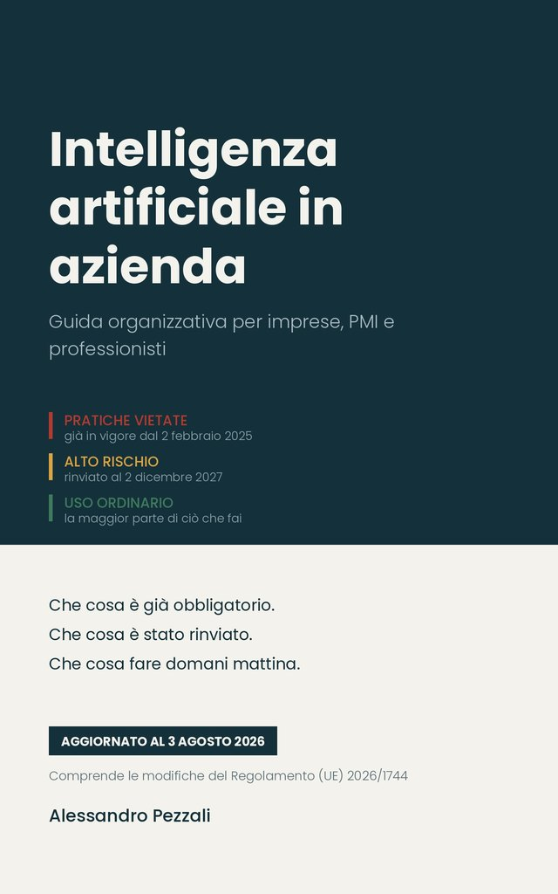

Guida organizzativa per imprese, PMI e professionisti. Questa pagina raccoglie i registri, le checklist e i moduli citati nel libro, insieme all'applicazione che li riproduce su telefono e tablet.
Testo aggiornato al 3 agosto 2026, con le modifiche del Regolamento (UE) 2026/1744.
Download diretto e gratuito. Non è richiesta alcuna registrazione, non viene chiesto alcun indirizzo di posta elettronica, non viene raccolto alcun dato.
Un foglio di calcolo con undici strumenti pronti: le celle da compilare sono evidenziate, ogni tabella ha una riga di esempio da cancellare, le colonne che servono a filtrare hanno valori predefiniti.
Formato .xlsx · si apre con Excel, Numbers, LibreOffice o Fogli Google
Tre modelli in formato testo, da adattare, protocollare e far firmare. Sono i documenti che nel libro chiudono il percorso: quelli che trasformano una regola in un'istruzione aziendale con una data e una firma.
Formato .docx · si apre con Word, Pages, LibreOffice o Documenti Google
Gli stessi registri, in forma di applicazione installabile, per chi preferisce compilarli dal telefono invece che in un foglio di calcolo. Copre il censimento dei sistemi, le valutazioni d'uso, gli strumenti autorizzati, la formazione, gli errori e gli incidenti, e genera una relazione periodica da presentare al vertice aziendale.
Si apre nel browser e si installa sulla schermata iniziale come una normale applicazione. Funziona senza connessione, non richiede registrazione e non prevede alcun account.
Nell'archivio locale del browser, sul dispositivo in uso. Non vengono trasmessi ad alcun server: l'applicazione non ha un backend e non effettua chiamate di rete oltre al caricamento dei propri file. Nessuno, autore compreso, ha accesso a ciò che vi inserisci.
Usa la funzione di esportazione con regolarità e conserva il file nei sistemi documentali aziendali.
Sono strumenti organizzativi. Non costituiscono parere legale, non sostituiscono la valutazione del consulente legale o del responsabile della protezione dei dati e non attestano la conformità dell'organizzazione ad alcuna disposizione, europea o nazionale. Le classificazioni di rischio che consentono di registrare sono valutazioni preliminari, da confermare in sede professionale.
Sono forniti gratuitamente e nello stato in cui si trovano, senza garanzia di funzionamento, di completezza, di aggiornamento o di idoneità a uno scopo determinato. L'autore non risponde di eventuali errori, malfunzionamenti, perdite di dati o conseguenze derivanti dal loro utilizzo, né di decisioni assunte sulla base di quanto vi è registrato. L'uso avviene sotto la responsabilità esclusiva di chi lo effettua.
Le scadenze normative eventualmente indicate riflettono il quadro alla data di pubblicazione e vanno riverificate sulle fonti ufficiali indicate nel libro.
Nei registri va inserita la descrizione delle informazioni trattate, non le informazioni riservate in sé. Il titolare del trattamento resta l'organizzazione che li utilizza, alla quale competono per intero gli adempimenti in materia di protezione dei dati, di sicurezza e di conservazione.